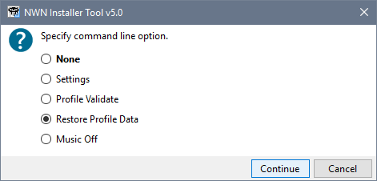
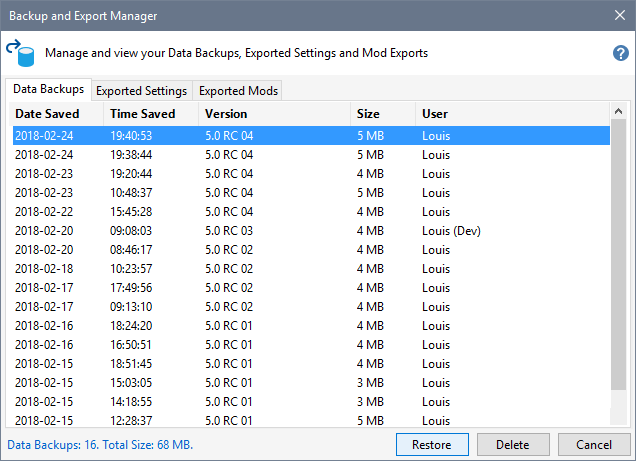

Click NWN Installer Tool -Commands from the Windows Start Menu, select Restore Profile Data and click Continue.

This displays a list of your backups before the Installer Tool attempts to load the Profile information. Select your latest backup and click Restore.
